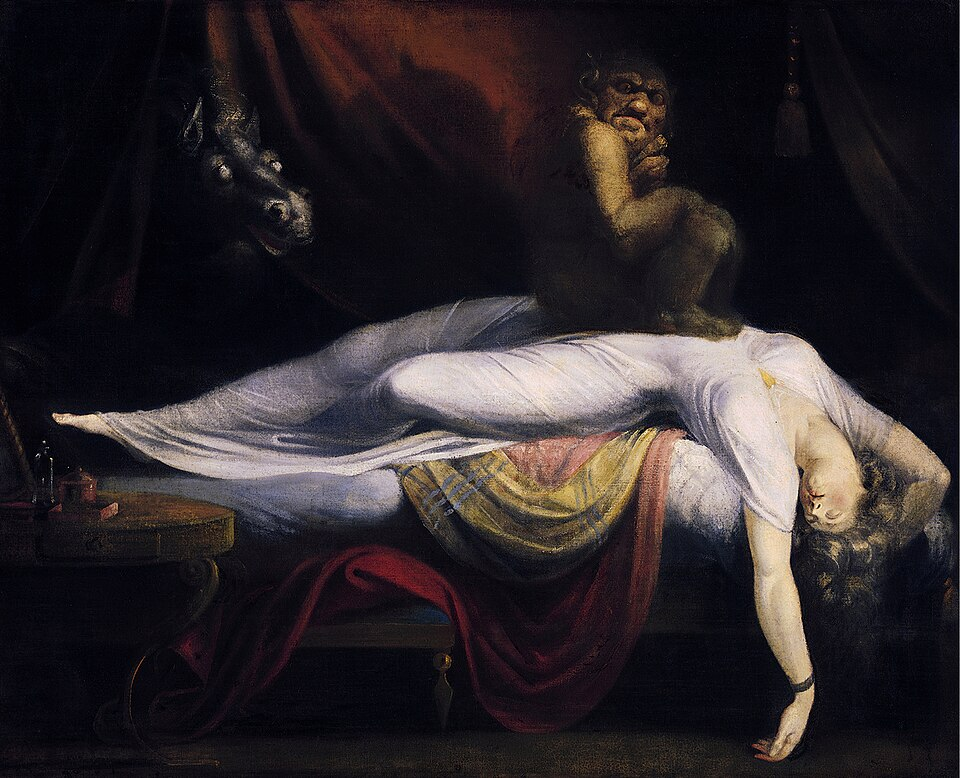
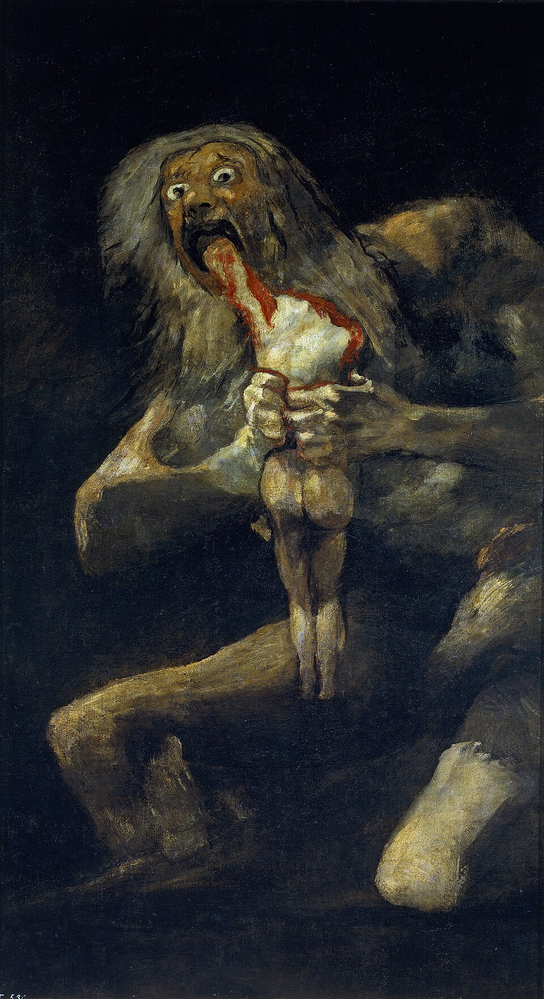
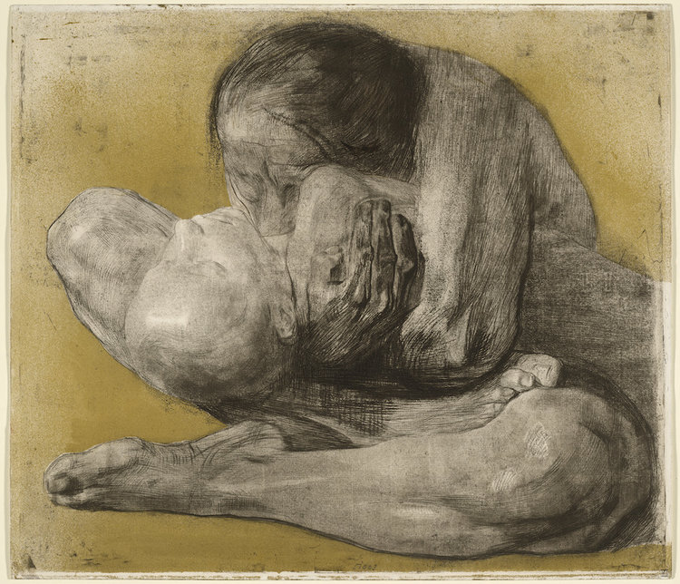

뭉크의 〈절규〉와 시편 54편을 함께 놓으면, 둘을 “두려움에 관한 같은 메시지”라고 묶기보다 두려움 속에서 인간의 목소리가 어디로 향하는가를 비교하는 편이 더 흥미롭습니다.
〈절규〉에서 먼저 보이는 것은 불안정하게 느껴지는 세계입니다. 하늘과 풍경은 물결치듯 휘어지고, 중심의 인물은 귀를 막은 채 입을 벌리고 있습니다. 뭉크가 남긴 관련 기록에는 산책 중 자연을 가로지르는 거대한 비명 같은 것을 느꼈다는 경험이 등장합니다. 이 작품은 단순히 “한 사람이 무서워서 소리 지르는 장면”이 아니라 인간과 세계 전체가 함께 흔들리는 듯한 불안을 시각화한 작품으로 읽혀 왔습니다. 다만 이를 특정한 종교적 절망의 표현이라고 단정할 근거는 없습니다.
시편 54편의 두려움은 조금 다릅니다. 표제와 본문이 제시하는 상황은 막연한 실존적 불안보다 구체적인 적대와 위협에 가깝습니다. 시인은 자신을 대적하는 이들이 일어나 자기 생명을 노린다고 말합니다(3절). 히브리어 본문의 ‘낯선 자들’은 일부 사본에서 ‘교만한 자들’로 읽히므로, 이를 특정 민족의 문제로 단정하지 않습니다. 그래서 첫 움직임은 자기 감정을 진정시키는 것이 아니라 하나님을 향한 외침입니다.
시편 54편 1절에서 시인은 하나님의 이름으로 구원을 요청합니다.
여기에서 〈절규〉와 시편 54편은 잠시 가까워집니다. 둘 다 두려움을 침묵시키지 않습니다. 인간은 안전한 척하지 않고, 견디기 어려운 현실 앞에서 외침을 내놓습니다.
하지만 결정적인 거리가 있습니다. 〈절규〉에서는 외침의 수신자가 분명하지 않습니다. 인간과 자연의 경계마저 흔들리면서 비명이 화면 전체를 삼키는 듯합니다. 반면 시편 54편의 외침에는 처음부터 수신자가 있습니다. 시인은 하나님께 자신의 기도에 귀 기울여 달라고 요청합니다(2절). 시는 두려움에서 시작하지만 마지막까지 그 자리에 머물지 않습니다. 4절의 하나님이 자신을 돕는 분이라는 고백을 지나 감사와 구원에 대한 신뢰로 이동합니다.
〈절규〉가 ‘두려움이 너무 커서 세계 전체가 비명처럼 느껴지는 순간’을 보여준다면, 시편 54편은 ‘그 비명이 누군가를 향한 기도가 될 수 있는가’를 묻습니다.
그렇다고 시편이 뭉크 작품에 대한 기독교적 ‘정답’인 것은 아닙니다. 〈절규〉가 포착한 근대적 불안과 시편의 구체적 적대 상황은 서로 다릅니다. 그 차이가 중요합니다. 한쪽에서는 인간의 외침이 공간 속에 메아리치는 듯하고, 다른 쪽에서는 그 외침이 “들어 달라”는 호소가 됩니다. 성경적 신앙에서 두려움의 반대는 반드시 감정의 즉각적인 소멸이 아니라, 두려움 속에서도 내가 혼자 말하고 있는 것이 아니라는 관계의 변화일 수 있습니다.
두려움의 여러 얼굴
뭉크의 〈절규〉를 중심에 놓으면, 두려움을 다룬 다른 예술 작품들이 “무서운 장면”이라는 한 범주로 모이지 않는다는 사실이 보입니다. 두려움이 어디에서 오는가에 따라 서로 다른 얼굴을 보여 줍니다.

헨리 퓨즐리, 〈악몽〉(1781)
잠든 여성의 가슴 위에 괴이한 존재가 올라앉아 있고, 어둠 속에서는 말의 머리가 나타납니다. 여기서 두려움은 바깥의 명백한 적보다 내가 통제할 수 없는 밤과 악몽의 침입처럼 나타납니다. 무의식이라는 설명은 이 작품에 대한 후대의 해석으로 구별해야 합니다. 뭉크의 〈절규〉와 닮은 것은 합리적인 설명보다 먼저 몸이 압도된다는 점입니다. 하지만 퓨즐리가 악몽을 하나의 기괴한 장면으로 형상화한다면, 뭉크에서는 인물뿐 아니라 하늘과 풍경까지 흔들립니다. 퓨즐리의 공포가 “무언가가 나를 누른다”에 가깝다면, 뭉크의 불안은 “세계 자체가 더 이상 안정되어 있지 않다”에 더 가깝습니다.

프란시스코 고야, 〈자식을 삼키는 사투르누스〉(1820–23년경)
신화에서 사투르누스는 자신의 권력을 빼앗길 것을 두려워하여 자식을 삼킵니다. 이 작품을 권력을 잃을까 두려워하는 자의 형상으로 읽으면, 두려워하는 존재가 피해자가 아니라 가해자가 되는 역설이 보입니다. 다만 이는 작품에 대한 여러 가능한 해석 가운데 하나입니다. 두려움은 사람을 움츠러들게만 하지 않고, 무엇인가를 움켜쥐고 파괴하게도 합니다.
시편 54편의 화자는 자신을 위협하는 힘에 맞서 하나님께 도움을 요청합니다. 반면 사투르누스는 자신이 잃을 것을 두려워하여 타인을 제거합니다. 같은 두려움이라도 한쪽은 도움을 구하는 외침으로, 다른 쪽은 통제를 위한 폭력으로 움직입니다.
파블로 피카소, 〈게르니카〉(1937)
여기서 두려움은 개인 내면보다 역사와 폭력 속의 집단적 공포가 됩니다. 찢어진 듯한 인체, 울부짖는 얼굴, 쓰러진 사람과 동물이 하나의 혼돈을 이룹니다. 〈절규〉의 중심에는 고립된 한 인물이 있지만, 〈게르니카〉에서는 절규가 한 사람의 얼굴을 넘어 여러 몸으로 흩어집니다. 뭉크가 현대인의 존재론적 불안을 떠올리게 한다면, 피카소는 전쟁이 인간의 삶과 몸을 파괴하는 정치적·역사적 공포를 전면에 놓습니다.

케테 콜비츠, 〈죽은 아이를 안은 여인〉(1903, 판화)
이 판화에는 〈절규〉처럼 입을 크게 벌린 비명도, 〈게르니카〉 같은 화면 전체의 파열도 없습니다. 어머니가 죽은 아이를 몸으로 감싸고 있을 뿐입니다. 바로 그 밀착된 몸에서 가장 사랑하는 것을 잃는 것에 대한 인간의 근원적 두려움이 느껴집니다. 두려움과 슬픔이 거의 분리되지 않는 지점입니다.
퓨즐리에게서는 두려움이 나를 덮치고, 뭉크에게서는 두려움이 나와 세계의 경계를 흔들며, 고야에게서는 두려움이 타인을 파괴하는 힘으로 변하고, 피카소에게서는 폭력적인 시대가 인간에게 두려움을 가하며, 콜비츠에게서는 두려움이 결국 상실의 슬픔과 맞닿습니다.
시편 54편은 그 어느 작품과도 완전히 일치하지 않습니다. 특히 〈게르니카〉의 역사적 폭력이나 콜비츠의 상실을 시편에 직접 대응시키기는 어렵습니다. 다만 중요한 공명이 있습니다. 성경은 두려움을 “믿음이 부족해서 생긴 감정” 정도로 지우지 않습니다. 시인은 실제 위협을 말하고, 그것을 하나님 앞에서 발화합니다. 그래서 중요한 차이는 두려움이 있는가 없는가가 아니라, 그 두려움이 인간을 어디로 움직이게 하는가입니다.
내가 두려울 때 내 안에서 나오는 절규는 지금 어디를 향하고 있을까요?
그리고 내게 더 낯익은 두려움은 어떤 것일까요. 나를 압도하는 두려움, 무언가를 통제하게 만드는 두려움, 아니면 잃을까 두려워 붙잡게 되는 두려움일까요?